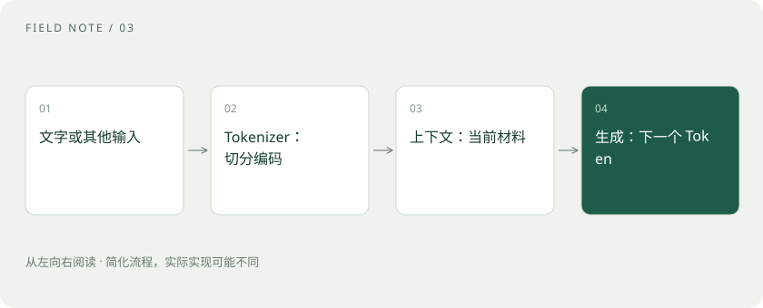

先读哪些知识
先用一个类比理解
把上下文想成一张有限大小的工作桌。你能放上对话、资料和工具结果；桌子很大，也不代表每一张纸都能被准确利用。
类比只帮助建立直觉，不等同于技术的完整机制。
一图看懂

Token 不是一个汉字的固定别名
Tokenizer 把文本转成编号序列。一个词可能对应多个 Token，不同模型和语言的切分方式不同。估算费用时应使用对应模型的计数方式，而不是固定套用“一个字等于一个 Token”。
上下文窗口不是永久记忆
窗口限制模型一次能够处理的序列长度。应用可能截断、摘要或检索历史，因此显示在聊天界面里的内容未必全部送入模型。产品记忆、外部知识库和模型参数也是不同的东西。
幻觉：生成看起来合理的错误
模型可能编造人名、来源或数字。生成机制不自带事实核验承诺；即便温度降低，错误也可能稳定重复。重要事实应返回原始资料检查，无法确认时允许回答“不知道”。
放进真实场景
SCENARIO
要求模型列出三篇论文时，标题和 DOI 都很像真的，仍要打开出版方或原论文页面验证。引用格式正确并不证明文献存在。
别踩这个误区
长上下文不等于无限记忆；RAG 也不能保证零幻觉。
想一想
把温度调到零，就一定不会编造吗？
不会。它能改变生成的随机性，但不能自动修复知识或推理错误。
关联阅读
资料与边界
本文为原创知识讲解。类比和图示经过简化；示例数字不代表实测或报价。整理日期：2026-11-04。文末列出对应技术的原始资料，具体功能与版本支持请以原文为准。